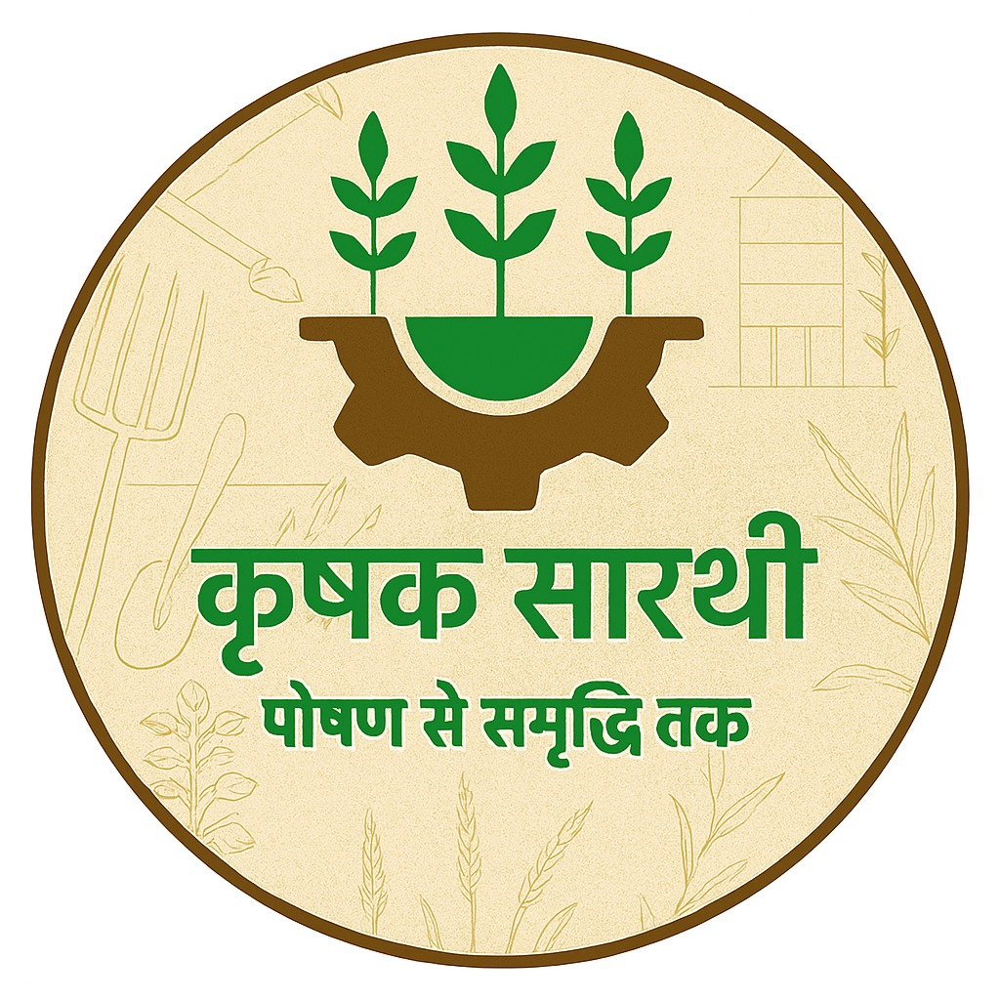

Empowering farmers with smart technology. An all-in-one agritech platform that brings knowledge, financial tools, and smart farming solutions directly to your fingertips.
Krishak Saarthi is a pioneering agritech app designed to support farmers by bridging the gap between traditional practices and modern technology.
Our mission is to empower farmers to make smarter, data-driven decisions easily, ensuring a more productive and profitable future.
Creating a sustainable and productive ecosystem for the backbone of our nation.
Improve crop yields with data-driven recommendations tailored to your soil.
Early disease detection and weather alerts to protect your precious harvest.
Better market insights and cost management tools to maximize your profits.
Promoting eco-friendly practices that preserve the land for future generations.
Tailored solutions for every stakeholder in the agricultural landscape.
Accessible tools for individual landowners and family farms.
Scalable technology for industrial-scale agricultural operations.
Business insights for those innovating in the food supply chain.
A platform for professionals to share knowledge and research.
Explore our wide range of features designed to simplify your daily operations.
Get personalized crop labels based on soil quality and climate.
Upload a photo of your plant and get instant diagnosis and cure.
Precise weather forecasts for your exact farm location.
Estimate input costs and potential revenue with ease.
Connect with fellow farmers to share tips and experiences.
Earn rewards for carbon-smart and sustainable farming.
Stay updated on the latest agricultural subsidies and loans.
Find and rent machinery from verified local providers.
Track your farm expenses and income digitally.
A team of dedicated students from Symbiosis Institute of Technology, Nagpur.
2nd Year CSE Student at SIT Nagpur. Visionary leader focused on agricultural digital transformation.
1st Year CSE Student. Innovative developer passionate about building scalable agri-solutions.
1st Year Student. Marketing strategist driving brand growth and community outreach.
1st Year CSE Student. Tech lead overseeing the architectural integrity of our platform.